자동차정비산업기사 (2018-04-28 기출문제)
1과목: 일반기계공학
1. 지름 42㎜, 표점거리 200㎜의 연강제 둥근 막대를 인장시험한 결과, 표점거리가 250㎜로 되었다면 연신율은 얼마인가?
- 20%
- 25%
- 35%
- 40%
(정답률: 64%)

2. 두 축의 중심선이 어느 정도 어긋났거나 경사시켰을 때 사용하며 결합부분에 합성고무, 가죽, 스프링 등의 탄성재료를 사용하여 회전력을 전달하는 것은?
- 플렉시블 커플링(flexible coupling)
- 클램프 커플링(clamp coupling)
- 플랜지 커플링(flange coupling)
- 머프 커플링(muff coupling)
(정답률: 81%)
3. 유압제어밸브를 기능상 크게 3가지로 분류할 때 여기에 속하지 않는 것은?
- 압력제어밸브
- 온도제어밸브
- 유량제어밸브
- 방향제어밸브
(정답률: 77%)
4. 자동차, 내연기관, 항공기, 펌프 등의 구성부품의 접합부 및 접촉면의 기밀을 유지하고 유체가 새는 것을 방지하기 위해 사용하는 패킹 재료로서 적합하지 않은 것은?
- 가죽
- 고무
- 네오프렌
- 세라믹
(정답률: 70%)
5. 모듈이 8, 잇수가 45개인 표준 평기어의 피치원 지름은 몇 ㎜인가?
- 180
- 260
- 360
- 440
(정답률: 78%)
6. 다음 중 일반적으로 벨트 풀리(belt pulley)와 같은 원형모양의 주형 제작에 편리한 주형법은?
- 혼성 주형법
- 회전 주형법
- 조립 주형법
- 고르게 주형법
(정답률: 85%)
7. 용접 이음부에 입상의 용제를 공급하고, 이 용제 속에서 전극과 모재 사이에 아크를 발생시켜 연속적으로 용접하는 방법은?
- TIG용접
- MIG용접
- 테르밋 용접
- 서브머지드 아크용접
(정답률: 74%)
8. 재료의 인장강도가 4000MPa, 안전율이 10이라면 허용응력은 몇 MPa인가?
- 200
- 300
- 400
- 500
(정답률: 84%)
9. 다음 중 가장 일반적으로 사용하면서 묻힘 키라고도 하며 축과 보스 양쪽에 키 홈을 파는 키는?
- 성크 키
- 반달 키
- 접선 키
- 미끄럼 키
(정답률: 75%)
10. 그림과 같은 단순보에서 RA와 RB의 값으로 적절한 것은?
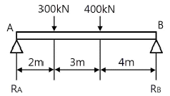
- RA＝396.8kN, RB＝303.2kN
- RA＝411.1kN, RB＝288.9kN
- RA＝432.3kN, RB＝267.7kN
- RA＝467.4kN, RB＝232.6kN
(정답률: 64%)
11. 나사산의 각도는 60도이고 인치계 나사이며, 보통나사와 가는나사가 있다. 미국, 영국, 캐나다 등 세 나라의 협정나사로서 ABC나사라고도 하는 것은?
- 관용나사
- 톱니나사
- 사다리꼴나사
- 유니파이 나사
(정답률: 82%)
12. 다음 중 암나사를 수기가공으로 작업을 할 때 사용되는 공구는?
- 탭
- 리머
- 다이스
- 스크레이퍼
(정답률: 69%)
13. 다음 중 베인 펌프(vane pump)의 형식으로 가장 적절한 것은?
- 원심식
- 왕복식
- 회전식
- 축류식
(정답률: 72%)
14. 비틀림을 받는 원형 단면 축의 극관성 모멘트는? (단, d는 원형 단면의 지름이다)
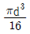
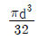
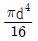
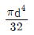
(정답률: 50%)
15. 관로의 도중에 단면적이 좁은 목(throat)을 설치하여 이 부분에서 발생하는 압력차를 측정하여 유량을 구하는 것은?
- 초크
- 위어
- 오리피스
- 벤투리미터
(정답률: 61%)
16. 일명 드로잉(drawing)이라고도 하며 소재를 다이 구멍에 통과시켜 봉재, 선재, 관재 등을 가공하는 방법은?
- 단조
- 압연
- 인발
- 전단
(정답률: 75%)
17. 선반작업용 부속장치 중 가늘고 긴 공작물을 가공할 때, 발생하는 미세한 떨림을 방지하기 위하여 사용하는 것은?
- 방진구
- 돌림판
- 돌리개
- 연동척
(정답률: 78%)
18. 탄소강에 함유되어 있는 원소 중 연신율을 감소시키지 않고 강도를 증가시키며, 고온에서 소성을 증가시켜 주조성을 좋게 하는 원소는?
- 망간(Mn)
- 규소(Si)
- 인(P)
- 황(S)
(정답률: 76%)
19. 다음 중 마그네슘의 일반적인 성질로 가장 거리가 먼 것은?
- 고온에서 발화하기 쉽다.
- 상온에서 압연과 단조가 쉽다.
- 비중은 1.74이다.
- 대기 중에서 내식성이 양호하나 물이나 바닷물에 침식되기 쉽다.
(정답률: 57%)
20. 코일스프링에서 코일의 평균지름이 50mm, 유효귄수가 10, 소선지름이 6mm, 축방향의 하중이 10N 작용할 때 비틀림에 의한 전단응력은 약 몇 MPa인가?
- 1.5
- 3.0
- 5.9
- 11.8
(정답률: 45%)
2과목: 자동차엔진
21. 기관의 도시 평균유효압력에 대한 설명으로 옳은 것은?
- 이론 PV선도로부터 구한 평균유효압력
- 기관의 기계적 손실로부터 구한 평균유효압력
- 기관의 실제 지압선도로부터 구한 평균유효압력
- 기관의 크랭크축 출력으로부터 계산한 평균유효압력
(정답률: 63%)
22. 전자제어 디젤 연료분사방식 중 다단분사의 종류에 해당하지 않는 것은?
- 주분사
- 예비분사
- 사후분사
- 예열분사
(정답률: 68%)
23. 디젤엔진의 기계식 연료분사장치에서 연료의 분사량을 조절하는 것은?
- 컷오프밸브
- 조속기
- 연료여과기
- 타이머
(정답률: 79%)
24. 자동차 정기검사의 소음도 측정에서 운행자동차의 소음허용기준 중 ( )에 알맞은 것은? (단, 2006년 1월 1일 이후에 제작되는 자동차)(관련 규정 개정전 문제로 여기서는 기존 정답인 1번을 누르면 정답 처리됩니다. 자세한 내용은 해설을 참고하세요.)
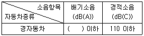
- 100
- 1⑤
- 110
- 115
(정답률: 80%)
25. 자동차 디젤엔진의 분사펌프에서 분사 초기에는 분사시기를 변경시키고 분사 말기는 분사시기를 일정하게 하는 리드 형식은?
- 역 리드
- 양 리드
- 정 리드
- 각 리드
(정답률: 67%)
26. 캐니스터에서 포집한 연료 증발가스를 흡기다기관으로 보내주는 장치는?
- PCV
- EGR밸브
- PCSV
- 서모밸브
(정답률: 69%)
27. 전자제어 가솔린엔진에 사용되는 센서 중 흡기온도 센서에 대한 내용으로 틀린 것은?
- 흡기온도가 낮을수록 공연비는 증가된다.
- 온도에 따라 저항값이 변화되는 NTC형 서미스터를 주로 사용한다.
- 엔진 시동과 직접 관련되며 흡입공기량과 함께 기본 분사량을 결정한다.
- 온도에 따라 달라지는 흡입 공기밀도 차이를 보정하여 최적의 공연비가 되도록 한다.
(정답률: 53%)
28. 전자제어 가솔린 분사장치의 흡입공기량 센서 중에서 흡입 하는 공기의 질량에 비례하여 전압을 출력하는 방식은?
- 핫 필름식
- 칼만 와류식
- 맵 센서식
- 베인식
(정답률: 48%)
29. 운행차 정밀검사의 관능 및 기능검사에서 배출가스 재순환 장치의 정상적 작동상태를 확인하는 검사방법으로 틀린 것은?
- 정화용 촉매의 정상부착 여부 확인
- 재순환 밸브의 수정 또는 파손 여부를 확인
- 진공호스 및 라인 설치 여부, 호스 폐쇄여부 확인
- 진공밸브 등 부속장치의 유⋅무, 우회로 설치 및 변경 여부를 확인
(정답률: 57%)
30. 기관에서 밸브 스템의 구비조건이 아닌 것은?
- 관성력이 증대되지 않도록 가벼워야 한다.
- 열전달 면적을 크게 하기 위하여 지름을 크게 한다.
- 스템과 헤드의 연결부는 응력집중을 방지하도록 곡률반경이 작아야 한다.
- 밸브 스템의 윤활이 불충분하기 때문에 마멸을 고려하여 경도가 커야 한다.
(정답률: 56%)
31. LPG를 사용하는 자동차의 봄베에 부착되지 않는 것은?
- 충전밸브
- 송출밸브
- 안전밸브
- 메인 듀티 솔레노이드밸브
(정답률: 80%)
32. LPG엔진의 특징에 대한 설명으로 옳은 것은?
- 연료 관 내에 베이퍼록이 발생하기 쉽다.
- 연료의 증발잠열로 인해 겨울철 시동성이 좋지 않다.
- 옥탄가가 낮은 연료를 사용하여 노크가 빈번히 발생한다.
- 연소가 불안정하여 다른 엔진에 비해 대기오염물질을 많이 발생한다.
(정답률: 78%)
33. 전자제어 엔진에서 연료의 기본 분사량 결정요소는?
- 배기 산소농도
- 대기압
- 흡입공기량
- 배기량
(정답률: 83%)
34. 엔진이 압축행정일 때 연소실 내의 열과 내부 에너지의 변화의 관계로 옳은 것은? (단, 연소실 내부 벽면온도가 일정하고, 혼합가스가 이상기체이다)(오류 신고가 접수된 문제입니다. 반드시 정답과 해설을 확인하시기 바랍니다.)
- 열＝방열, 내부에너지＝증가
- 열＝흡열, 내부에너지＝불변
- 열＝흡열, 내부에너지＝증가
- 열＝방열, 내부에너지＝불변
(정답률: 51%)
35. 배기량 400cc, 연소실 체적 50cc인 가솔린엔진이 3000rpm일 때, 축 토크가 8.95kgf⋅m이라면 축출력은 약 몇 PS인가?(오류 신고가 접수된 문제입니다. 반드시 정답과 해설을 확인하시기 바랍니다.)
- 15.5
- 35.1
- 37.5
- 38.1
(정답률: 54%)
36. 전자제어 엔진의 연료분사장치 특징에 대한 설명으로 가장 적절한 것은?
- 연료 과다 분사로 연료소비가 크다.
- 진단장비 이용으로 고장수리가 용이하지 않다.
- 연료분사 처리속도가 빨라서 가속 응답성이 좋아진다.
- 연료 분사장치 단품의 제조원가가 저렴하여 엔진가격이 저렴하다.
(정답률: 83%)
37. 엔진의 오일여과기 및 오일팬에 쌓이는 이물질이 아닌 것은?
- 오일의 열화 및 노화로 발생한 산화물
- 토크컨버터의 열화로 인한 퇴적물(슬러지)
- 기관 섭동부분의 마모로 발생한 금속 분말
- 연료 및 윤활유의 불완전 연소로 생긴 카본
(정답률: 72%)
38. 연료장치에서 연료가 고온상태일 때 체적 팽창을 일으켜 연료 공급이 과다해지는 현상은?
- 베이퍼록 현상
- 퍼컬레이션 현상
- 캐비테이션 현상
- 스텀블 현상
(정답률: 59%)
39. 가솔린엔진에서 노크발생을 억제하기 위한 방법으로 틀린것은?
- 연소실벽 온도를 낮춘다.
- 압축비, 흡기온도를 낮춘다.
- 자연 발화온도가 낮은 연료를 사용한다.
- 연소실 내 공기와 연료의 혼합을 원활하게 한다.
(정답률: 71%)
40. 피스톤의 단면적 40cm2, 행정 10㎝, 연소실 체적 50cm3인 기관의 압축비는 얼마인가?
- 3 : 1
- 9 : 1
- 12 : 1
- 18 : 1
(정답률: 68%)
3과목: 자동차섀시
41. 중량이 2000kgf인 자동차가 20˚의 경사로를 등반 시 구배(등판) 저항은 약 몇 kgf인가?
- 522
- 584
- 622
- 684
(정답률: 41%)
42. 무단변속기(CVT)를 제어하는 유압제어 구성부품에 해당하지않는 것은?
- 오일펌프
- 유압제어밸브
- 레귤레이터밸브
- 싱크로메시기구
(정답률: 76%)
43. 축거를 L(m), 최소 회전반경을 R(m), 킹핀과 바퀴 접지면과의 거리를 r(m)이라 할 때 조향각 α를 구하는 식은?
- sinα＝L/(R-r)
- sinα＝(L-r)/R
- sinα＝(R-r)/L
- sinα＝(L-R)/r
(정답률: 55%)
44. TCS(Traction Control System)가 제어하는 항목에 해당하는 것은?
- 슬립제어
- 킥 업 제어
- 킥 다운 제어
- 히스테리시스 제어
(정답률: 69%)
45. TCS(Traction Control System)에서 트레이스 제어를 위해 컴퓨터(TCU)로 입력되는 항목이 아닌 것은?
- 차고센서
- 휠스피드 센서
- 조향 각속도 센서
- 액셀러레이터 페달 위치 센서
(정답률: 59%)
46. 선회 주행 시 앞바퀴에서 발생하는 코너링 포스가 뒷바퀴보다 크게 되면 나타나는 현상은?
- 토크 스티어링 현상
- 언더 스티어링 현상
- 오버 스티어링 현상
- 리버스 스티어링 현상
(정답률: 69%)
47. 사이드슬립 테스터로 측정한 결과 왼쪽 바퀴가 안쪽으로 6mm, 오른쪽 바퀴가 바깥쪽으로 8mm 움직였다면 전체 미끄럼량은?(오류 신고가 접수된 문제입니다. 반드시 정답과 해설을 확인하시기 바랍니다.)
- in 1mm
- out 1mm
- in 7mm
- out 7mm
(정답률: 68%)
48. 클러치페달을 밟았다가 천천히 놓을 때 페달이 심하게 떨리는 이유가 아닌 것은?
- 플라이휠이 변형되었다.
- 클러치 압력판이 변형되었다.
- 플라이휠의 링기어가 마모되었다.
- 클러치 디스크 페이싱의 두께치가 있다.
(정답률: 61%)
49. 2세트의 유성기어 장치를 연이어 접속시키고 일체식 선기어를 공용으로 사용하는 방식은?
- 라비뇨식
- 심프슨식
- 밴딕스식
- 평행축 기어방식
(정답률: 64%)
50. 저속 시미(shimmy)현상이 일어나는 원인으로 틀린 것은?
- 앞 스프링이 절손되었다.
- 조향핸들의 유격이 작다.
- 로어암의 볼조인트가 마모되었다.
- 타이로드 엔드의 볼조인트가 마모되었다.
(정답률: 77%)
51. 병렬형 하이브리드 자동차의 특징 설명으로 틀린 것은?
- 모터는 동력 보조만 하므로 에너지 변환 손실이 적다.
- 기존 내연기관 차량을 구동장치의 변경 없이 활용 가능하다.
- 소프트방식은 일반 주행 시에는 모터 구동만을 이용한다.
- 하드 방식은 EV 주행 중 엔진 시동을 위해 별도의 장치가 필요하다.
(정답률: 59%)
52. 드럼식 브레이크와 비교한 디스크식 브레이크의 특징이 아닌 것은?
- 자기작동작용이 발생하지 않는다.
- 냉각성능이 작아 제동성능이 향상된다.
- 마찰 면적이 적어 패드의 압착력이 커야한다.
- 주행 시 반복 사용하여도 제동력 변화가 적다.
(정답률: 72%)
53. 전자제어 현가장치의 기능에 대한 설명 중 틀린 것은?
- 급제동시 노스다운을 방지할 수 있다.
- 변속단에 따라 변속비를 제어할 수 있다.
- 노면으로부터의 차량 높이를 조절할 수 있다.
- 급선회 시 원심력에 의한 차체의 기울어짐을 방지할 수 있다.
(정답률: 68%)
54. 무단변속기(CVT)의 특징에 대한 설명으로 틀린 것은?
- 토크 컨버터가 없다.
- 가속 성능이 우수하다.
- A/T 대비 연비가 우수하다.
- 변속단이 없어서 변속 충격이 거의 없다.
(정답률: 70%)
55. 다음 그림은 자동차의 뒤차축이다. 스프링 아래 질량의 진동중에서 X축을 중심으로 회전하는 진동은?
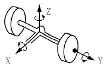
- 휠 트램프
- 휠 홈
- 와인드 업
- 롤링
(정답률: 67%)
56. 공기 브레이크의 특징으로 틀린 것은?
- 베이퍼록이 발생되지 않는다.
- 유압으로 제동력을 조절한다.
- 기관의 출력이 일부 사용된다.
- 압축공기의 압력을 높이면 더 큰 제동력을 얻을 수 있다.
(정답률: 66%)
57. ABS(Anti-lock Brake System)에 대한 두 정비사의 의견 중 옳은 것은?(오류 신고가 접수된 문제입니다. 반드시 정답과 해설을 확인하시기 바랍니다.)
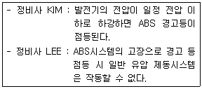
- 정비사 KIM만 옳다.
- 정비사 LEE만 옳다.
- 두 정비사 모두 옳다.
- 두 정비사 모두 틀리다.
(정답률: 73%)
58. 기관의 축출력은 5000rpm에서 75kW이고, 구동륜에서 측정한 구동출력이 64kW이면 동력전달장치의 총 효율은 약 몇 %인가?(오류 신고가 접수된 문제입니다. 반드시 정답과 해설을 확인하시기 바랍니다.)
- 15.3
- 58.8
- 85.3
- 117.8
(정답률: 53%)
59. 다음은 종감속기어에서 종감속비를 구하는 공식이다. ( )안에 알맞은 것은?
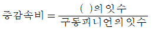
- 링기어
- 스크루기어
- 스퍼기어
- 래크기어
(정답률: 88%)
60. 휴대용 진공펌프 시험기로 점검할 수 있는 항목과 관계없는 것은?
- 서모밸브 점검
- EGR밸브 점검
- 라디에이터 캡 점검
- 브레이크 하이드로 백 점검
(정답률: 67%)
4과목: 자동차전기
61. 에어백 시스템을 설명한 것으로 옳은 것은?
- 충돌이 생기면 무조건 전개되어야 한다.
- 프리텐셔너는 운전석 에어백이 전개된 후에 작동한다.
- 에어백 경고등이 계기판에 들어와도 조수석 에어백은 작동된다.
- 에어백이 전개 되려면 충돌감지 센서의 신호가 입력되어야 한다.
(정답률: 82%)
62. 기동전동기의 풀인(pull-in)시험을 시행할 때 필요한 단자의 연결로 옳은 것은?
- 배터리 (＋)는 ST단자에 배터리 (-)는 M단자에 연결한다.
- 배터리 (＋)는 ST단자에 배터리 (-)는 B단자에 연결한다.
- 배터리 (＋)는 B단자에 배터리 (-)는 M단자에 연결한다.
- 배터리 (＋)는 B단자에 배터리 (-)는 ST단자에 연결한다.
(정답률: 54%)
63. 기전력이 2V이고 0.2Ω의 저항 5개가 병렬로 접속되었을 때 각 저항에 흐르는 전류는 몇 A인가?
- 10
- 20
- 30
- 40
(정답률: 55%)
64. 다음은 자동차 정기검사의 등화장치검사기준에서 전조등의 광도측정 기준이다. ( )안에 알맞은 것은?
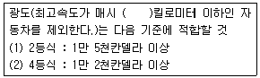
- 25
- 35
- 45
- 60
(정답률: 60%)
65. 0.2μF와 0.3μF의 축전기를 병렬로 하여 12V의 전압을 가하면 축전기에 저장되는 전하량은?
- 1.2μC
- 6μC
- 7.2μC
- 14.4μC
(정답률: 56%)
66. 점화플러그의 방전전압에 영향을 미치는 요인이 아닌 것은?
- 전극의 틈새모양, 극성
- 혼합가스의 온도, 압력
- 흡입공기의 습도와 온도
- 파워트랜지스터의 위치
(정답률: 75%)
67. 그림과 같은 회로에서 전구의 용량이 정상일 때 전원 내부로 흐르는 전류는 몇 A인가?
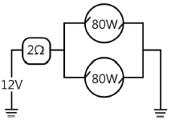
- 2.14
- 4.13
- 6.65
- 13.32
(정답률: 42%)
68. 다음은 자동차 정기검사의 계기장치검사기준이다. ( ) 안의 내용으로 알맞은 것은?
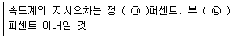
- ㉠ 15, ㉡ 5
- ㉠ 15, ㉡ 10
- ㉠ 25, ㉡ 5
- ㉠ 25, ㉡ 10
(정답률: 47%)
69. 자계와 자력선에 대한 설명으로 틀린 것은?
- 자계란 자력선이 존재하는 영역이다.
- 자속은 자력선 다발을 의미하며 단위로는 Wb/m2를 사용한다.
- 자계강도는 단위 자기량을 가지는 물체에 작용하는 자기력의 크기를 나타낸다.
- 자기유도는 자석이 아닌 물체가 자계 내에서 자기력의 영향을 받아 자석을 띠는 현상을 말한다.
(정답률: 64%)
70. MF(Maintenance Free) 배터리의 특징에 대한 설명으로 틀린것은?
- 자기방전률이 높다.
- 전해액의 증발량이 감소되었다.
- 무보수(무정비) 배터리라고도 한다.
- 산소와 수소가스를 증류수로 환원시킬 수 있는 촉매 마개를 사용한다.
(정답률: 69%)
71. 전자제어 점화장치의 작동 순서로 옳은 것은?
- 각종 센서 → ECU → 파워트랜지스터 → 점화코일
- ECU → 각종 센서 → 파워트랜지스터 → 점화코일
- 파워트랜지스터 → 각종 센서 → ECU → 점화코일
- 각종 센서 → 파워트랜지스터 → ECU → 점화코일
(정답률: 74%)
72. 점화 2차 파형에서 감쇠 진동 구간이 없을 경우 고장 원인으로 옳은 것은?
- 점화코일 불량
- 점화코일의 극성 불량
- 점화 케이블의 절연 상태 불량
- 스파크플러그의 에어 갭 불량
(정답률: 57%)
73. 릴레이 내부에 다이오드 또는 저항이 장착된 목적으로 옳은 것은?
- 역방향 전류 차단으로 릴레이 점검 보호
- 역방향 전류 차단으로 릴레이 코일 보호
- 릴레이 접속 시 발생하는 스파크로부터 전장품 보호
- 릴레이 차단 시 코일에서 발생하는 서지전압으로부터 제어모듈 보호
(정답률: 62%)
74. 교류발전기 불량 시 점검해야 할 항목으로 틀린 것은?
- 다이오드 불량 점검
- 로터 코일 절연 점검
- 홀드인 코일 단선 점검
- 스테이터 코일 단선 점검
(정답률: 58%)
75. 자동차의 에어컨 중 냉방효과가 저하되는 원인으로 틀린 것은?
- 압축기 작동시간이 짧을 때
- 냉매량이 규정보다 부족할 때
- 냉매주입 시 공기가 유입되었을 때
- 실내 공기순환이 내기로 되어 있을 때
(정답률: 79%)
76. 자동차의 전조등에 사용되는 전조등 전구에 대한 설명 중 ( )안에 알맞은 것은?
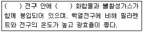
- 네온
- 할로겐
- 필라멘트
- LED
(정답률: 79%)
77. 배터리의 과충전 현상이 발생되는 주된 원인은?
- 배터리 단자의 부식
- 전압 조정기의 작동 불량
- 발전기 구동벨트 장력의 느슨함
- 발전기 커넥터의 단선 및 접촉 불량
(정답률: 73%)
78. 차량으로부터 탈거된 에어백 모듈이 외부전원으로 인해 폭발(전개)되는 것을 방지하는 구성품은?
- 클럭 스프링
- 단락 바
- 방폭 콘덴서
- 인플레이터
(정답률: 72%)
79. 자동차에 적용된 이모빌라이저 시스템의 구성품이 아닌 것은?
- 외부 수신기
- 안테나 코일
- 트랜스 폰더 키
- 이모빌라이저 컨트롤 유닛
(정답률: 55%)
80. 배터리 전해액의 온도(1℃) 변화에 따른 비중의 변화량은? (단, 표준온도는 20℃이다)
- 0.0003
- 0.00⑤
- 0.0007
- 0.0009
(정답률: 67%)